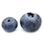
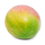
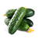
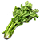

Fruits
1.
bananas - 73%
2.
apples - 69%

3.
grapes - 62%
4.
strawberries - 62%
5.
oranges - 56%
6.
Watermelon - 54%
7.
Lemons - 48%
8.
blueberries - 45%

9.
peaches - 42%
10.
pineapple - 42%
11.
avocados - 39%
12.
cantaloupe - 38%
13.
cherries - 34%
14.
limes - 33%
15.
pears - 32%
16.
raspberries - 31%
17.
blackberries - 28%
18.
plums - 23%
19.
mangoes - 23%
new to list, replacing 2017 nectarines
new to list, replacing 2017 nectarines

20.
honeydew - 22%
new to list, replacing 2017 grapefruit
new to list, replacing 2017 grapefruit
Vegetables
1.
potatoes - 68%
2.
onions - 66%
3.
tomatoes - 65%
4.
carrots - 60%
5.
bell peppers - 53%
6.
lettuce - 53%
7.
broccoli - 51%
8.
salad mix - 50%
9.
cucumbers - 49%

10.
celery - 46%

11.
corn - 45%
12.
mushrooms - 42%
13.
garlic - 41%
14.
spinach - 40%

15.
green beans - 39%
16.
sweet potatoes - 38%
17.
green onions - 33%
18.
cauliflower - 33%
19.
cabbage - 33%
20.
asparagus - 30%